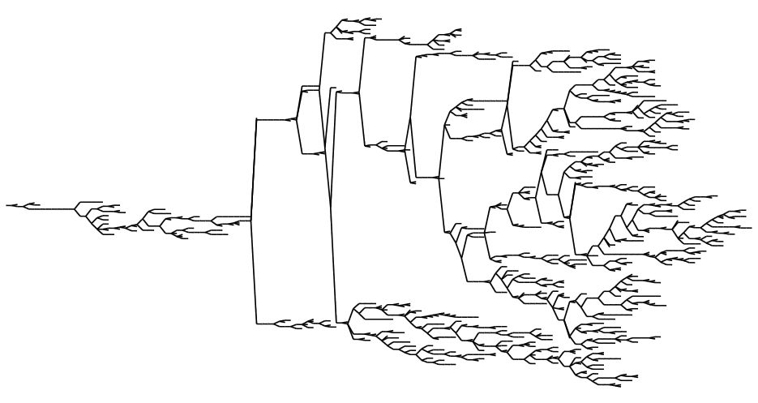
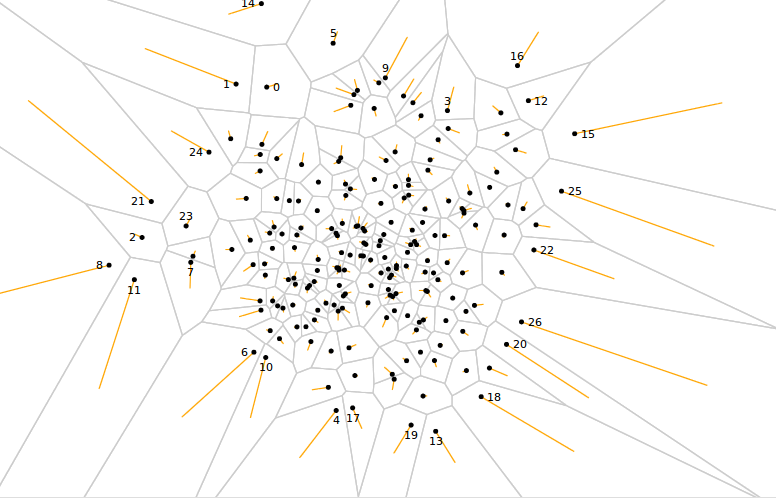
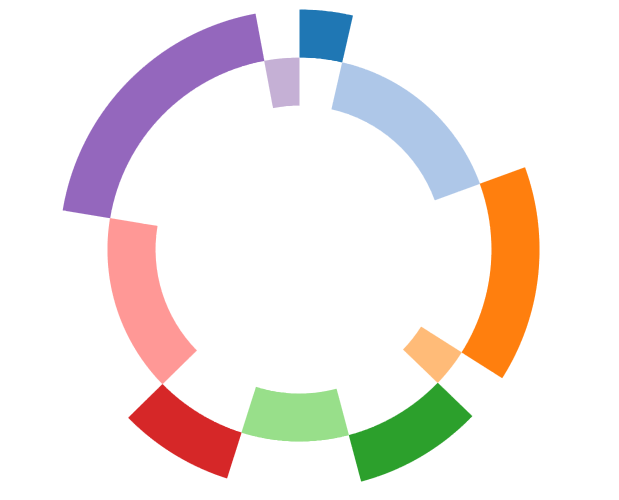
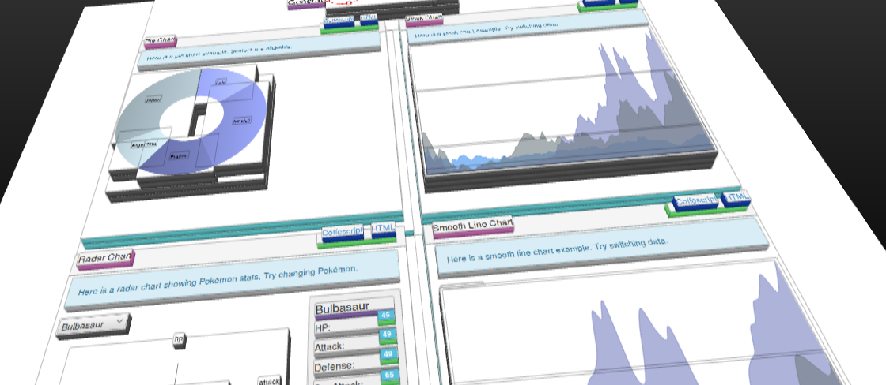

Presentation at Milano JS User group
Application in the browser are starting to become
This is what we used to do
$(function() {
var list = $('#playground').append('ul');
cities.forEach(function(city) {
list.append('li')
.data('city', city)
.append('a')
.text(city)
.click(showIt);
});
});
...and also
function showIt(event) {
var city = $(event.target).data('city');
alert('You clicked on ' + city);
event.preventDefault();
}
This can become more declarative
$scope.print = function(city) {
alert('You clicked on ' + city);
};
Today we can do a lot in the browser
Today we can do a lot in the browser
Today we can do a lot in the browser
We can embed SVG inside HTML
<svg width="800" height="500">
<svg width="800" height="500">
<rect width="200" height="200" />
</svg>
<svg width="800" height="500">
<rect width="200" height="200" />
<circle cx="50" cy="50" r="40" />
</svg>
<svg width="800" height="500">
<g>
<rect width="200" height="200" />
<circle cx="50" cy="50" r="40" />
</g>
</svg>
<svg width="800" height="500">
<g>
<rect width="200" height="200" />
<circle cx="50" cy="50" r="40" />
</g>
<line x1="0" y1="0" x2="200" y2="200" />
</svg>
<svg width="800" height="500">
<g>
<rect width="200" height="200" />
<circle cx="50" cy="50" r="40" />
</g>
<line x1="0" y1="0" x2="200" y2="200" />
<text x="0" y="15">But the most general tag is...</text>
</svg>
<svg width="800" height="500">
<g>
<rect width="200" height="200" />
<circle cx="50" cy="50" r="40" />
</g>
<line x1="0" y1="0" x2="200" y2="200" />
<path d="M 110 -85 A 140 140 0 0 1 57 97 L 24 55 A 60 60 0 0 0 48 -37 Z"/>
</svg>
What?!?!?
First, create a simple graphics, then adjust it
<svg width="800" height="500">
<g transform="rotate(90)">
<rect width="200" height="200" />
<circle cx="50" cy="50" r="40" />
</g>
<g transform="scale(1.2) translate(100, 100)">
<rect width="200" height="200" />
<circle cx="50" cy="50" r="40" />
</g>
</svg>
What was that nonsense in path?
What was that nonsense in path?
Lowercase letters for relative coordinates
Most graphics libraries are not customizable enough in:
D3 works by pairing data and elements
D3 works by pairing data and DOM elements
We can first select existing DOM elements and attach data to them...
D3 works by pairing data and DOM elements
We can first select existing DOM elements and attach data to them...
...or select existing data and generate associated DOM
d3.select("div.output svg")
.selectAll("rect") // Three existing rectangles
.data([127, 61, 256])
.attr("x", 0)
.attr("y", function(d,i) { return i*90+50 })
.attr("width", function(d,i) { return d; }) // Function of the datum
.attr("height", 20)
.style("fill", "steelblue")
d3.select("div.output svg")
.selectAll("rect") // No existing rectangles by now
.data([127, 61, 256])
.enter() // what's this?
.append("rect")
.attr("x", 0)
.attr("y", function(d,i) { return i*90+50 })
.attr("width", function(d,i) { return d; })
.attr("height", 20)
.style("fill", "steelblue")
var selection = d3.select("rect").data([...]);var selection = d3.select("rect").data([...]);The enter selection matches data not yet bound to elements
var enter = selection.enter();
enter.append("rect") // Now it has elements
var selection = d3.select("rect").data([...]);The enter selection matches data not yet bound to elements
var enter = selection.enter();
enter.append("rect") // Now it has elements
The exit selection matches elements not yet bound to data
var exit = selection.exit();
exit.remove() // No more mismatch
The rest looks pretty much like jQuery
selection
.transition()
.duration(3000)
.attr("x", 0)
.attr("y", function(d,i) { return i*90+50 })
.attr("width", function(d,i) { return d; })
.attr("height", 20)
.style("fill", "steelblue")
.transition()
.duration(3000)
.delay(3000)
.style("fill", "green")
.attr("width", function(d,i) {
return d*1.5;
})
D3 is very powerful and versatile, but..
D3 is very powerful and versatile, but..
D3 is very powerful and versatile, but..
D3 is very powerful and versatile, but..
D3 is very powerful and versatile, but..
D3 is very powerful and versatile, but..
D3 is very powerful and versatile, but..
What if we left all the rendering to frameworks like React, Angular, Ractive?
What if we left all the rendering to frameworks like React, Angular, Ractive?
Data binding could be used to make animations!
We just need a way to derive geometric shapes from the data
The path as a low level component
var path = Path() // paths are immutable
.moveto(10, 20) // hence each operation returns a new path
.lineto(30, 50)
.lineto(25, 28)
.qcurveto(27, 30, 32, 27)
.closepath();
var d = path.print(); // The string representation
// in the template...
<path d="{{ d }}" fill="red" />
Paths for common shapes can be generated from geometric data
var rectangle = Rectangle({top: 10, bottom: 3, left: -2, right: 5 });
var path = rectangle.path;
var labelPosition = rectangle.centroid; //useful to place labels
var sector = Sector({
center: [10, 20],
r: 5,
R: 15,
start: 0,
end: Math.PI / 2
});
var path2 = sector.path;
Collection of shapes can be derived from data
var pie = Pie({
data: [
{ name: 'Italy', population: 59859996 },
...
],
accessor: function(x) { return x.population; }, // how to read the datum
center: [20, 15],
r: 30,
R: 50
});
The template side
<svg>
{% for curve in pie.curves %}
<path d="{ curve.sector.path.print() }" fill="{ color(curve.index) }" >
{% endfor %}
<svg>